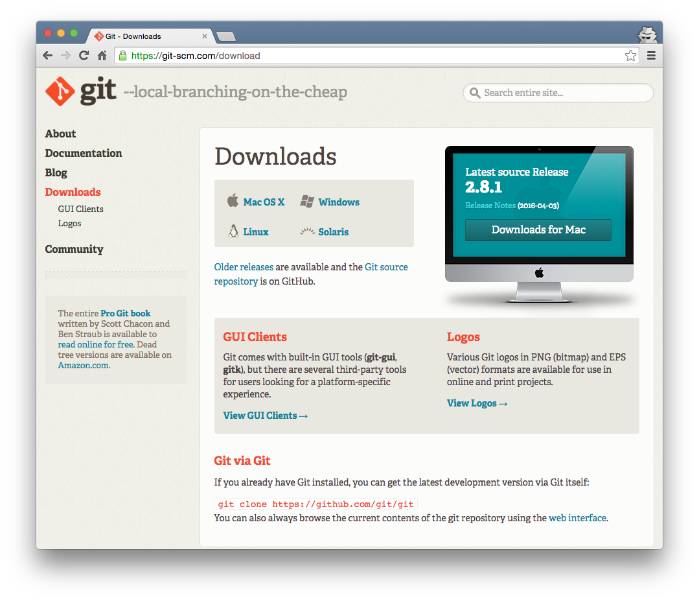
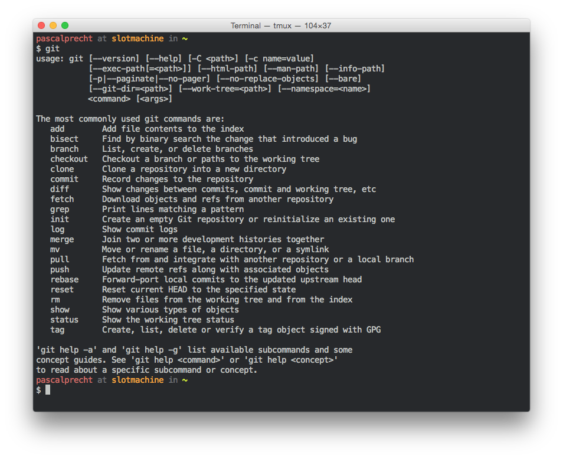
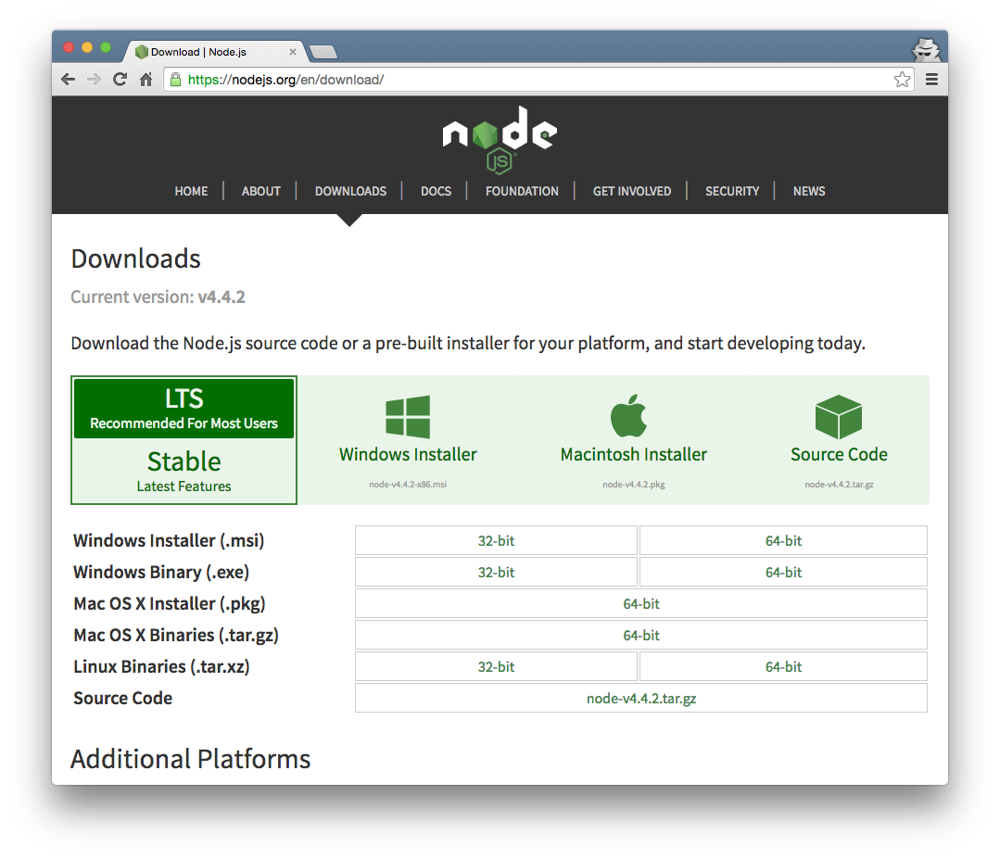
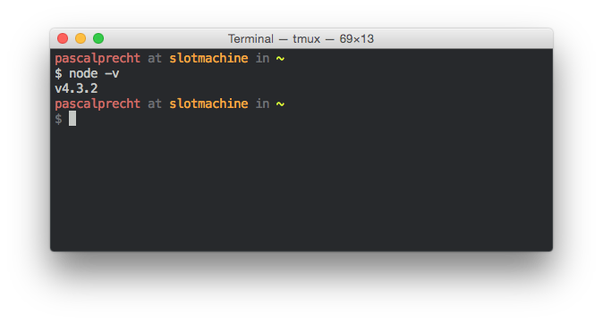
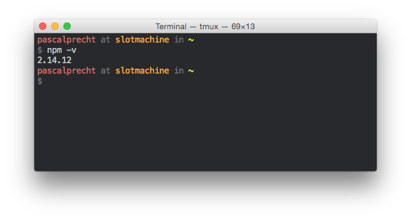
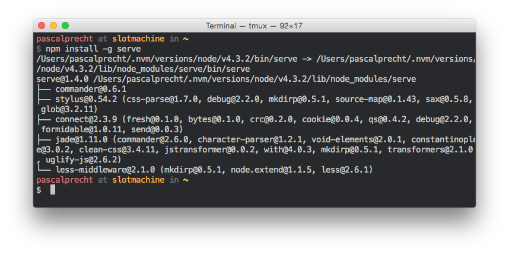
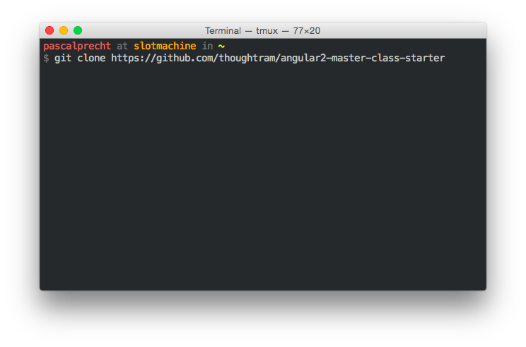

Preparation Guide
This is the thougtram Preparation Guide to get you and your machine ready for your next training. Depending on what training you'll attend, the setup and prerequisites might be different, as we're using different tools to give you the best experience possible. Some tools are also rather optional as they'd ease the overall training flow but aren't necessary to attend or follow our training.
Please read the following guides depending on which class you're going to join:
Git Master Class
Angular Master Class
Angular 2 Master Class
Git
Git is a version control system that we use to manage and maintain the code of our entire training material, including slides, exercises, exercise descriptions and solutions. Thus, there are a couple of repositories for each training class you might want to install on your machine to have a smooth experience.
Installing Git
Installing Git is easy. Simply head over to git-scm.com/download and download the latest binary for your platform.

Once you've downloaded the binary, execute the installer so Git will be installed on you machine. This will set up the command line tool for Git. After the installation is finished, open your terminal (for Windows users we recommend Git Bash which comes with the dedicated installer) and type git --help. This will output the help for Git's most common commands. If you see the same as what is shown in the following figure, Git is installed on your machine and runs properly.

Node.js/npm
Node.js is JavaScript runtime built on Chrome's V8 JavaScript engine. npm is the largest package ecosystem of open source libraries in the world. We use node to run webservers and build scripts, as those are written in JavaScript, and npm to install needed dependencies for our exercises.
Installing Node.js and npm
To install Node and npm on your machine, grab the latest binary from nodejs.org/en/download and execute the installer. Follow the assistent's instructions, the installation process might take a while.

Make sure you have a version installed that is >= 4 to avoid weird problems during the training. To check your node version, simply run node -v in your terminal.

You should now have also npm installed. To double check, run npm -v in your terminal.

Cool, Node and npm are running on your machine!
serve command
For this guide, you need to have Node.js installed first. If you don't have it yet, go and read our guide on installing Node.
Some exercises in the Angular Master Class require a static web server to serve application files. There are several ways to spin up a web server and you can totally use what ever you want as long as you know how to make it run during the class. If you don't know an easy way to spin up a static web server, we recommend the serve command, which is a Node.js module that allows you to start a web server on any file directory on your local machine.
Installing serve
To install serve as a global command on your machine, execute npm install -g serve in your terminal of choice.

After that, you can run serve as a command and give it a path to a directory you want to serve. Optionally, you can change the port the server is listening to using the -p or --port option.
Angular CLI
For this guide, you need to have Node.js installed first. If you don't have it yet, go and read our guide on installing Node.
Throughout the Angular 2 Master Class, we use the official Angular command line interface to scaffold the application, generate components, services and compile and run the code. We think it's the best experience you can get when devolping Angular 2 application, as it takes a lot of hassle away from you by providing many powerful tools and an optimized build process which even lets you easily deploy your application on GitHub.
Installing Angular CLI
To install Angular CLI on your machine, execute npm install -g angular-cli in your terminal of choice.
Angular 2 Master Class Starter Kit
For this guide, you need to have Git installed first. If you don't have it yet, go and read our guide on installing Git.
To get started quickly at our training, we've prepared a starter kit repository that you'll use to build your application during the class. You can download or git clone the repository from github.com/thoughtram/angular2-master-class-starter.

The repository comes with a scaffolded Angular 2 application structure that was generated using Angular CLI, hence, this application can be run using the usual Angular CLI commands like ng serve.